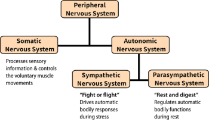
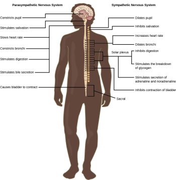
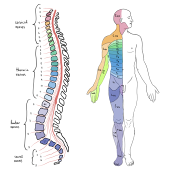

2.4: The Peripheral Nervous System
The peripheral nervous system (PNS) connects the central nervous system with the rest of the body. It serves as a communication relay between the CNS and muscles, organs, and glands. The peripheral nervous system includes nerves that are connected to the brain (cranial nerves) and the spinal cord (spinal nerves). Unlike the CNS, the PNS is not protected by the bone of the skull and spine. Nor does it have a barrier between itself and the blood (like the blood-brain barrier), leaving it exposed to toxins and mechanical injuries .
The PNS can be divided into the autonomic nervous system, which controls bodily functions without conscious control, and the somatic nervous system, which transmits sensory information from the skin, muscles, and sensory organs to the CNS and also sends motor commands from the CNS to the muscles (Figure 3).

The Autonomic Nervous System
The autonomic nervous system serves as the relay between the CNS and the internal organs. It controls the lungs, the heart, smooth muscle, and exocrine and endocrine glands. The autonomic nervous system controls these organs largely without conscious control. It can continuously monitor the conditions of these different systems and implement changes as needed. There are two divisions of the autonomic nervous system that often have opposing effects: the sympathetic nervous system and the parasympathetic nervous system.
The Sympathetic Nervous System. The sympathetic nervous system is responsible for the “fight or flight” response that occurs when an animal encounters a dangerous situation. One way to remember this is to think of the surprise a person feels when encountering a snake (“snake” and “sympathetic” both begin with “s”). Examples of functions controlled by the sympathetic nervous system include an accelerated heart rate and inhibited digestion. These functions help prepare an organism’s body for the physical strain required to escape a potentially dangerous situation or to fend off a predator.
The Parasympathetic Nervous System. While the sympathetic nervous system is activated in stressful situations, the parasympathetic nervous system allows an animal to “rest and digest.” One way to remember this is to think that during a restful situation like a picnic, the parasympathetic nervous system is in control (“picnic” and “parasympathetic” both start with “p”). The parasympathetic nervous system resets organ function after the sympathetic nervous system is activated (the common adrenaline dump you feel after a ‘fight-or-flight’ event). Thus the sympathetic and parasympathetic nervous systems work in a push–pull manner (Figure 4). Examples of functions controlled by the parasympathetic nervous system include slowing of heart rate, lowered blood pressure, and stimulation of digestion.

The Somatic Nervous System
The somatic nervous system manages external interactions: sensing the environment via sensory neurons and sending commands to skeletal muscles via motor neurons. It often governs voluntary behaviors initiated by complex brain processes. For example, you hear your name, interpret the speech, and turn your head towards the sound.
The somatic nervous system is made up of cranial and spinal nerves and contains both sensory and motor neurons. Sensory neurons transmit sensory information from the skin, skeletal muscle, and sensory organs to the CNS. Motor neurons transmit messages about desired movement from the CNS to skeletal muscles to make them contract. Without a somatic nervous system, an animal would be unable to process any information about its environment (what it sees, feels, hears, etc.) and could not control motor movements.
Cranial nerves. Humans have 12 cranial nerves; these nerves emerge from the skull (cranium), as opposed to the spinal nerves, which emerge from the vertebral column. Each cranial nerve is accorded a name, as shown in Figure 5. Some cranial nerves transmit only sensory information. For example, the olfactory nerve transmits information about smells from the nose to olfactory regions in the brain. Other cranial nerves transmit almost solely motor information. For example, the oculomotor nerve controls the opening and closing of the eyelid and some eye movements. Other cranial nerves contain a mix of sensory and motor fibers. For example, the glossopharyngeal nerve has a role in both taste (sensory) and swallowing (motor).
![Illustration shows the underside of the brain. The twelve cranial nerves cluster around the brain stem, and are symmetrically located on each side. The olfactory nerve is short and lobe-like, and is located closest to the front. Directly behind this is the optic nerve, then the oculomotor nerve. All these nerves are located in front of the brain stem. The trigeminal nerve, which is the thickest, is located on either side of the brain stem. It forms three branches shortly after leaving the brain. The trochlear nerve is a small nerve in front of the trigeminal nerve. Behind the brain stem are the smaller facial, vestibulocochlear, glossopharyngeal and hypoglossal nerves. The nerve furthest back is the accessory nerve.](../assets/media/dcf2309d5d2b3924-12-cranial-nerves-350x242.png)
Spinal nerves. Spinal nerves transmit sensory and motor information between the spinal cord and the rest of the body. Each of the 31 spinal nerves in humans contains both sensory and motor axons. The sensory neuron cell bodies are grouped in structures called dorsal root ganglia (dorsal = toward back) (Figure 6). Each sensory neuron projects from a sensory receptor in skin, muscle, or sensory organs to a synapse with a neuron in the dorsal spinal cord. Motor neurons have cell bodies in the ventral gray matter of the spinal cord that project to muscle through the ventral root (ventral = toward belly). These neurons are usually stimulated by interneurons within the spinal cord but are sometimes directly stimulated by sensory neurons (as in a reflex arc). Each spinal nerve corresponds to different body regions—for example, spinal nerves that exit near the top of the spine correspond to the shoulders and arms, whereas spinal nerves that exit near the bottom of the spine correspond to legs and feet (Figure 7).
![Illustration shows a cross section of the spinal cord. The gray matter forms an X inside the white matter. A spinal nerve extends from the left arm of the X, and another extends from the left leg of the X. The two nerves join together to the left of the spine. The right arm and leg of the X form a symmetrical nerve. The part of the nerve that exits from the leg of the X is called the ventral root, and the part that exists from the arm of the X is called the dorsal root. The ventral root is on the belly side, and the dorsal root is on the back side. The dorsal root ganglion is a bulge halfway between where the nerve leaves the spine and where the dorsal and ventral roots join. Sensory neuron somas cluster in the dorsal root. Motor neuron somas cluster in the gray matter in the leg of the X. Motor neuron axons are bundled in the ventral root.](../assets/media/91fca9e770ff47c5-spinal-nerves-350x273.jpeg)

Text Attributions
This section contains material adapted from:
The Nervous System in General Biology (Boundless). https://bio.libretexts.org/Bookshelves/Introductory_and_General_Biology/Book%3A_General_Biology_(Boundless)/35%3A_The_Nervous_System/35.09%3A__The_Nervous_System License: CC BY SA 4.0
Clark, M.A., Douglas, M. & Choi, J. (2023). 34.5 The Peripheral Nervous System. In Biology 2e. OpenStax. Access for free at https://openstax.org/books/biology-2e/pages/35-4-the-peripheral-nervous-system License: CC BY 4.0 DEED.
Hall, C. N. (2023). 2 Exploring the brain: A tour of the structures of the nervous system. In Introduction to Biological Psychology. University of Sussex Library. Access for free at https://openpress.sussex.ac.uk/introductiontobiologicalpsychology/chapter/exploring-the-brain-a-tour-of-the-structures-and-cells-of-the-nervous-system/ License: CC BY-NC 4.0 DEED
Media Attributions
- Peripheral nervous system © Noba is licensed under a CC BY-NC-SA (Attribution NonCommercial ShareAlike) license
- The sympathetic and parasympathetic nervous systems © OpenStax is licensed under a CC BY-NC-SA (Attribution NonCommercial ShareAlike) license
- 12 cranial nerves © OpenStax is licensed under a CC BY-NC-SA (Attribution NonCommercial ShareAlike) license
- Spinal nerves © OpenStax is licensed under a CC BY-NC-SA (Attribution NonCommercial ShareAlike) license
- Spinal cord segments in the vertebral column © Wikipedia is licensed under a CC0 (Creative Commons Zero) license


All of the nerve cells that connect the central nervous system to all the other parts of the body.
A part of the peripheral nervous system that connects to glands and smooth muscles. Consists of sympathetic and parasympathetic divisions.
A part of the peripheral nervous system that uses cranial and spinal nerves in volitional actions.
A division of the autonomic nervous system, that is faster than its counterpart that is the parasympathetic nervous system and works in opposition to it. Generally engaged in “fight or flight” functions.
A division of the autonomic nervous system that is slower than its counterpart—that is, the sympathetic nervous system—and works in opposition to it. Generally engaged in “rest and digest” functions.
A set of 12 paired nerves that emerge directly from the brain and relay information between the brain and parts of the body; primarily to the head and neck regions.
Mixed nerves that carry sensory and motor information between the spinal cord and rest of the body.